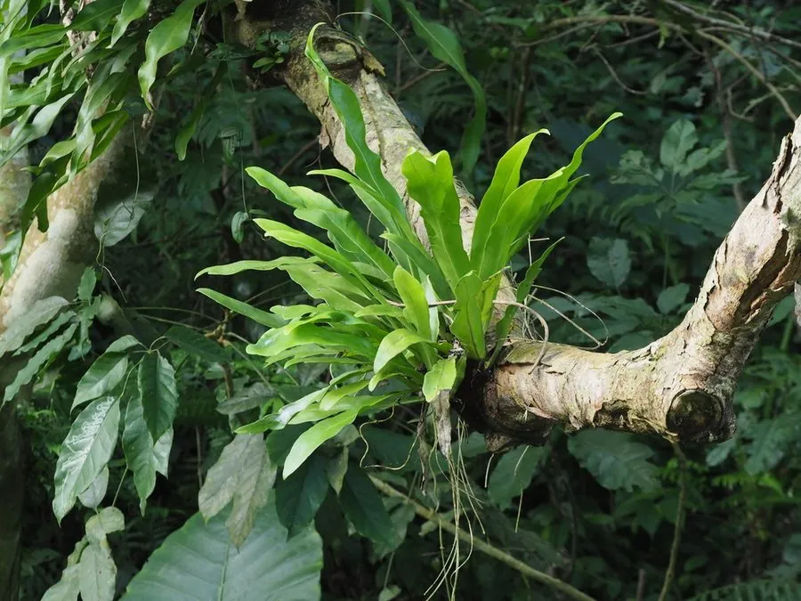

蕨类与裸子植物 · 植物界
星蕨 Microsorum punctatum

星蕨叶片宽大革质、全缘，叶背布满散生的星状孢子囊群，是热带雨林中常见的附生蕨类与观叶植物。
- 分类
- 门蕨类植物门纲水龙骨纲目水龙骨目科水龙骨科属星蕨属
- 栖息环境
- 热带、亚热带雨林的树干、岩壁与石缝，喜高温高湿半阴
- 地理分布
- 中国华南、西南及亚洲热带地区，东南亚分布广泛
- 保护级别
- 暂无评估；野生与栽培种群均常见
物种志
星蕨是水龙骨科的多年生蕨类，株高 30–60 cm。根状茎粗壮横走，肉质，密生鳞片。叶近生或远生，单叶、全缘，叶片披针形或椭圆状披针形，革质，深绿色而稍有光泽，侧脉明显、网结成网眼。孢子囊群圆形，散生于叶背中脉两侧，成熟时呈橙褐色，像撒在叶背的星星，因此得名“星蕨”。
星蕨喜温暖高湿和半阴环境，常附生于热带、亚热带雨林的树干、岩壁与石缝中，也可生于腐殖质丰富的林下地面。它以孢子繁殖，根状茎可匍匐蔓延，栽培时用疏松透气的基质附生种植，是雨林缸、墙面绿化的常用植物。在东南亚，部分星蕨的嫩叶被作为野菜食用；全草在民间也作药用。星蕨在亚洲热带地区分布广泛，中国华南、西南有记录。
形态与习性
- 株高30–60 cm
- 叶单叶全缘，革质深绿
- 孢子囊群圆形，散生于叶背
- 根状茎粗壮横走，肉质
- 习性附生，喜高温高湿
- 用途雨林造景与墙面绿化
趣味知识
- 星蕨的孢子囊群像撒在叶背的星星，名字就是这么来的。
- 它是附生蕨类，常长在雨林树干和岩壁上，而不是土里。
- 星蕨叶片单叶全缘，和其他羽状分裂的蕨类外形差别很大。